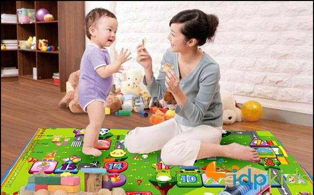
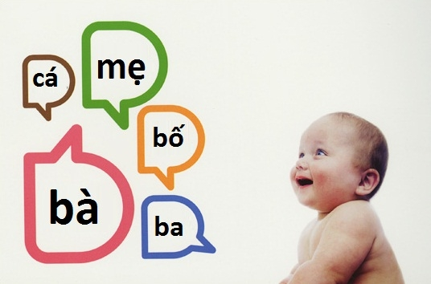

Học nói sẽ thú vị hơn nếu đó là một trò chơi. Trẻ nhỏ rất thích hỏi và được hỏi: “Cái gì đây?”. Khi bạn và bé đến một nơi nào đó mới mẻ với bé như quán cà phê, sân bay, cửa hàng, nên chỉ vào thứ gì đó và hỏi: “Cái gì đây con?”. Để bé luôn hứng thú, bạn nên bắt đầu bằng những thứ bé đã biết như con mèo, bánh quy rồi thỉnh thoảng lại chen vào những vật mà bé chưa biết tên. Nếu bé không biết, bạn có thể nói thầm vào tai bé để bé nói to lên, sau đó cho bé biết vật đó là gì và dùng để làm gì: “Đó là cây dù. Chúng ta dùng dù để che mưa cho đầu khỏi ướt”.
Khi bé lớn hơn, bạn có thể dạy bé tập nói với những trò phức tạp hơn một chút, ví dụ như trò “Chuyện gì sẽ xảy ra tiếp theo?”. Bạn bắt đầu bằng cách kể cho bé nghe một câu chuyện. Khi câu chuyện đã lên đến cao trào, hãy để bé kể tiếp phần còn lại. Nếu bé chưa đủ kỹ năng ngôn ngữ để diễn đạt các chi tiết cụ thể, bạn có thể giúp bé bằng cách hỏi những câu hỏi mang tính dẫn dắt như: “Con nghĩ cún con có chạy đi không?”. Khi hai mẹ con đã đồng ý về hướng đi tiếp theo của câu chuyện, bạn có thể hỏi bé thêm các chi tiết như: “Con nghĩ cún con sẽ đi đâu?” hoặc: “Cún sẽ đi với ai?”.

Ba mẹ nên tận dụng mọi khoảng thời gian có thể khi ở nhà và ra ngoài để dạy bé tập nói
Trẻ con không chỉ thích nghe chuyện của người lớn mà còn thích được góp ý kiến nữa. Nói cách khác, đừng cho rằng những chuyện người lớn nói chỉ như gió thổi qua tai vì bé hiểu được nhiều hơn bạn tưởng. Ví dụ: nếu vợ chồng bạn đang chọn màu để sơn lại phòng tắm, nên hỏi bé những câu liên quan đến vấn đề này: “Tường của phòng tắm có màu gì nhỉ? Chúng ta nên sơn tường phòng tắm màu gì thì đẹp?”. Dù ý kiến của bé không được chọn, việc phát biểu ý kiến cũng rất có lợi cho quá trình dạy bé tập nói.

Hầu hết các bé đều thích biểu diễn trước ống kính máy quay. Bạn thử bật máy quay và hô to: “Bắt đầu diễn” để xem bé phản ứng như thế nào. Một số bé không cần khuyến khích mà có thể bắt đầu diễn xuất ngay. Nếu bé không chủ động, bạn có thể hướng dẫn bé một chút bằng cách hỏi các câu hỏi giống như phỏng vấn trên tivi. Sau đó bạn cho bé xem lại đoạn phim vừa quay sẽ khiến bé thêm hứng thú để tiếp tục trò chơi. Khi đã nhìn thấy hình ảnh và nghe thấy âm thanh của mình, bé sẽ tỏ ra hào hứng và muốn biểu diễn thêm lần nữa.